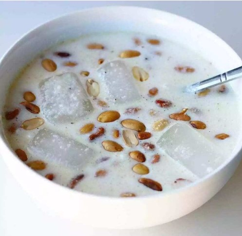

Gari soakings aka soakins

What is Gari soakings?
Gari soakings is a popular Ghanaian dessert that is prepared by using gari(cassava powder or flakes). It is very simple and fast and economical. It is a popuplar food among the young Ghanaians.It got its name from the way it is prepared using lots of water. The method and ingredients for preparing it are not fixed. It varies from one person to another.
ingredients
- 1/2 cup of gari
- 1/2 cup water
- 2 1/2 teaspoon sugar
- Honey/ sugar any sweetener of choice
- Powdered or evaporated milk to serve
steps
- Pour the half cup of gari in a bowl or cup
- Add sugar and milk if powdered. You can also add milo and groundnut at this stage.
- Add the water while mixing continuously
- Mix untill the mixture stays watery
- Serve with milk of your choice. You can add groundnut if you want to.